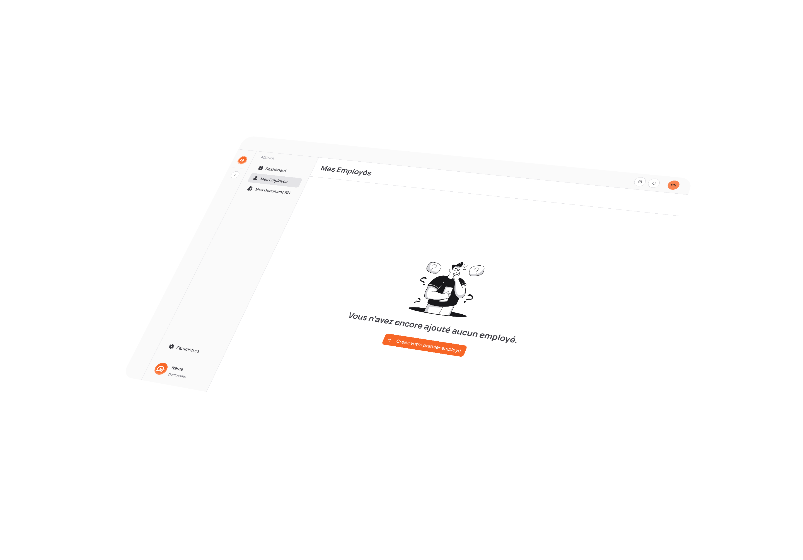

kassirh — Foundations
The first design system for kassirh, generated from the Figma token export. A Fluent 2 semantic architecture — Zinc neutrals, a #f76626 primary, Manrope type — with light & dark themes. Every swatch below reads a live CSS variable, so this page is always the source of truth. Drop new Figma links in and components land under Components.
Design System in FigmaLogo & brand
The kassirh mark: an orange symbol (the stylised k) with the wordmark set in brand navy #11163A. Use the full logo where space allows; the symbol alone for avatars, favicons and tight spots.
on light
on peach
on navy
Color — palettes
Primitive ramps (50→950). These are raw values; components never touch them directly — they consume the semantic roles below.
Color — semantic roles
The ergonomic layer components actually use. Names stay stable across light & dark — flip the theme to watch the values remap while the roles hold.
Typography
Manrope, nine-tier scale from the tokens (h1 49px → footnote 10px). Use the .kx-* classes.
Radius
Corner ramp — default surface radius is md · 8px.
Elevation
Drop-shadow tokens for raised surfaces, menus, dialogs and popovers.
Spacing
4-point spacing scale for padding, gaps and layout rhythm.
Icons
The system uses Fluent UI System Icons (Regular weight, MIT). Icons render at 16px in components and inherit currentColor. Reference one with <span class="kx-icon" data-icon="info"></span>; the set grows as components need glyphs.
Flags
Round 24px country flags for phone inputs, language pickers and nationality fields. The complete set (~250 flags) is an imported asset library — a handful relevant to kassirh's market are shown here; wire the rest from a flag-icon package rather than hand-drawing each.
Buttons
A button triggers an action — submitting a form, opening a dialog, confirming a choice. The variant signals how much weight the action carries: one primary (brand-filled) action per view, secondary for the common alternative, ghost and link for low-emphasis actions, and danger for destructive ones. Every button answers to hover, press and keyboard focus, and greys out when its action isn't available.
.kx-btn--icon × any variant / size / roundText fields
Text fields let the user enter and edit a value — a name, an email, a longer note. Each pairs a label with its control and can carry a hint below; when validation fails, the border turns red and the hint becomes the error message. Fields highlight on focus and grey out when disabled, so their state is always readable at a glance.
Selection controls
Selection controls capture a choice. Use a checkbox for independent on/off options, a radio group when exactly one option must be chosen from a set, and a switch to flip a setting that takes effect immediately. Each shows its state clearly and responds to both click and keyboard.
Field layout
A field pairs a label with its control so the two always read as one unit. Lay fields out vertically — label above the control — for most forms and narrow columns; switch to horizontal, with the label in a fixed column beside the control, for dense settings screens where the eye scans a list of properties. The same controls slot into either orientation — text, select, radio, textarea, checkbox, slider.
Badges & status
A badge is a small label that tags something in a word or two. The Badge comes in five style weights — from a loud primary fill down to a quiet ghost — so it can sit anywhere from a headline callout to an inline tag, and can carry an icon or act as a removable, focusable chip. For fixed states an item simply is — active, expired, on trial — reach for a Status pill, where colour does the talking.
Avatars
An avatar stands in for a person, showing their photo or falling back to their initials when there's no image. It makes rows and headers scannable — a face or a monogram registers faster than a name. Four sizes span dense tables to profile headers, in a round or soft-square shape. When several people share a thing — a team, a shift, a document — stack the avatars into an overlapping group, capped with a +N count.
Cards
A card gathers related content and actions onto one surface, lifting it off the page so it reads as a distinct unit. Use it for an item in a list, a summary stat, or any self-contained block — the header holds a title, the body the content, the footer its actions. A card can be static, or behave as a link into a detail view.

Dashboard redesign, mobile-responsive first : new analytics widgets, simplified navigation, dark mode. Due : 6 weeks.
Alert
An alert is an inline message that flags a status or piece of information in place, without interrupting the task the way a dialog does — the user reads it and keeps going. Use Neutral for ordinary information and Error to surface a problem; add a second line for detail, or a button to offer the next step. It stays quiet by design: a neutral surface where only the text and icon carry the tone, so several can sit on a page without shouting.
Sync complete
The file could not be imported
New reporting deadline
CNSS must be filed before the 15th of the month.
Save failed
Check your connection, then try again.
Employee created
Carine Nanté has been added to your organization.
Missing information
Select a document type before generating.
Tip
Import your employees in bulk via a CSV file.
Breadcrumb
A breadcrumb shows where the current page sits in the hierarchy and lets the user step back up it. Use it on deep pages — an employee's file inside a team inside the org — so people always know their location and can climb back with one click. Each level up to the last is a link; the current page is the bold, non-clickable end of the trail.
Accordion
An accordion folds a long page into collapsible sections, so the user sees a scannable list of headers and opens only what they need. It suits FAQs, grouped settings, or any set of topics browsed one at a time. Clicking a header expands its panel and rotates the chevron; in single-open mode, opening one closes the rest. Headers are real buttons — reachable by Tab, with a visible focus ring.
Dialog
A dialog interrupts the user with a single focused decision, floating a card over a dimmed backdrop so nothing else can be touched until it's resolved. Reach for it when an action needs explicit confirmation — especially destructive or irreversible ones like deleting an employee. While open it traps keyboard focus; the user confirms, cancels, presses Esc, or clicks the backdrop to dismiss. Use standard (inline actions) for routine confirmations and centered (stacked actions) to give a single weighty choice more presence.
Edit profile
Update the employee information, then save.
Delete this item?
Are you sure you want to delete this employee? This action cannot be undone.
Table
A table lays structured records out in rows and columns so the user can scan and compare them across the same fields — the employee list is the canonical case. Column headers label the data; rows highlight on hover and can hold avatars, badges and per-row actions. Reach for it when comparison matters; for a single record, a card reads better.
| Full name | Job title | Department | Status | ||
|---|---|---|---|---|---|
| CNCarine Nanté | HR Assistant | Human Resources | Active | ||
| SMSerge Moko | Accountant | Finance | On trial | ||
| JDJeanne Dubois | Operations | Operations | Departed |
Feedback
Feedback keeps the user oriented while the system works. A progress bar shows how far a known task has got; a spinner marks an indeterminate wait; a skeleton holds the shape of content that's still loading so the layout doesn't jump when it arrives; a tooltip reveals a short hint on hover. The point is the same — never leave the user wondering whether something is happening.
Navigation
The app frame: an icon rail to switch workspaces and apps, a labelled sidebar that groups destinations into sections with one active at a time, and a top bar for search, notifications and the account. Together they orient the user — where they are, where they can go, and who they're signed in as.
Incoming — from Figma
Share a Figma link and the component is built here on these exact tokens, then documented in KASSIRH_DESIGN_SYSTEM.md.